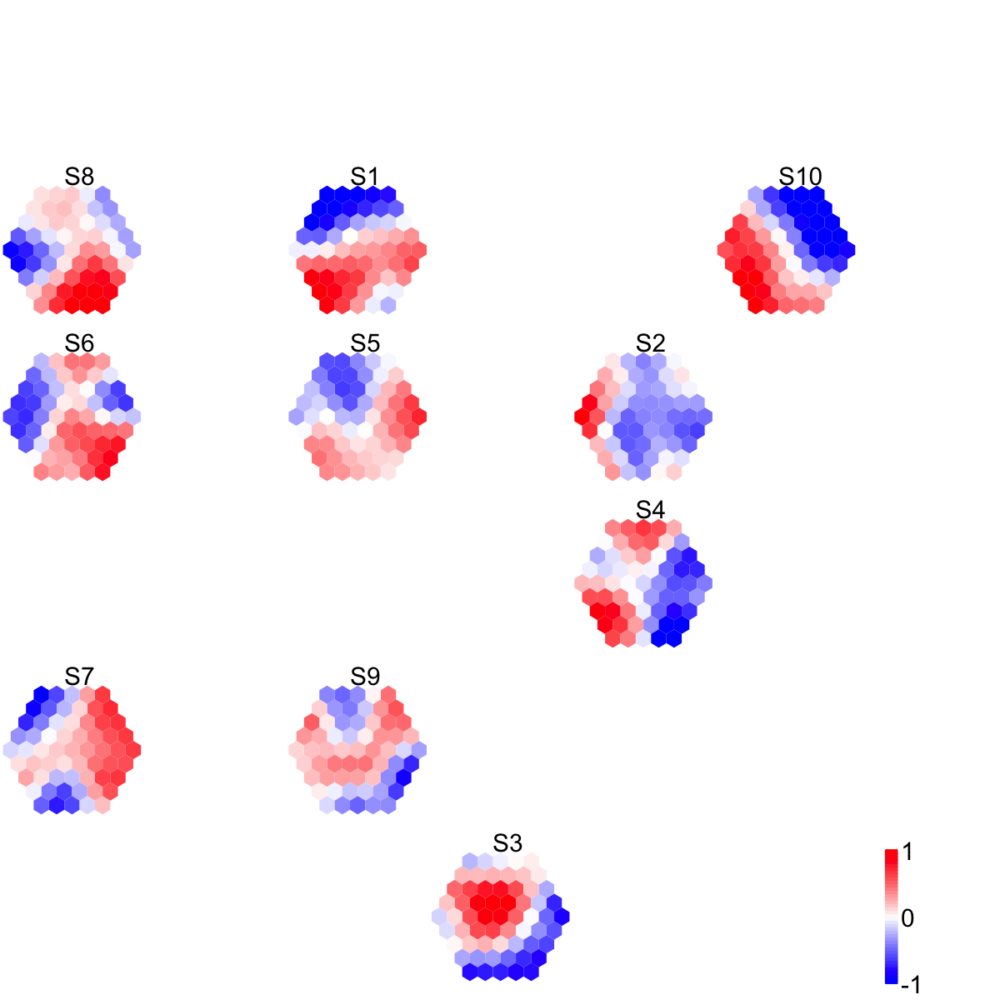
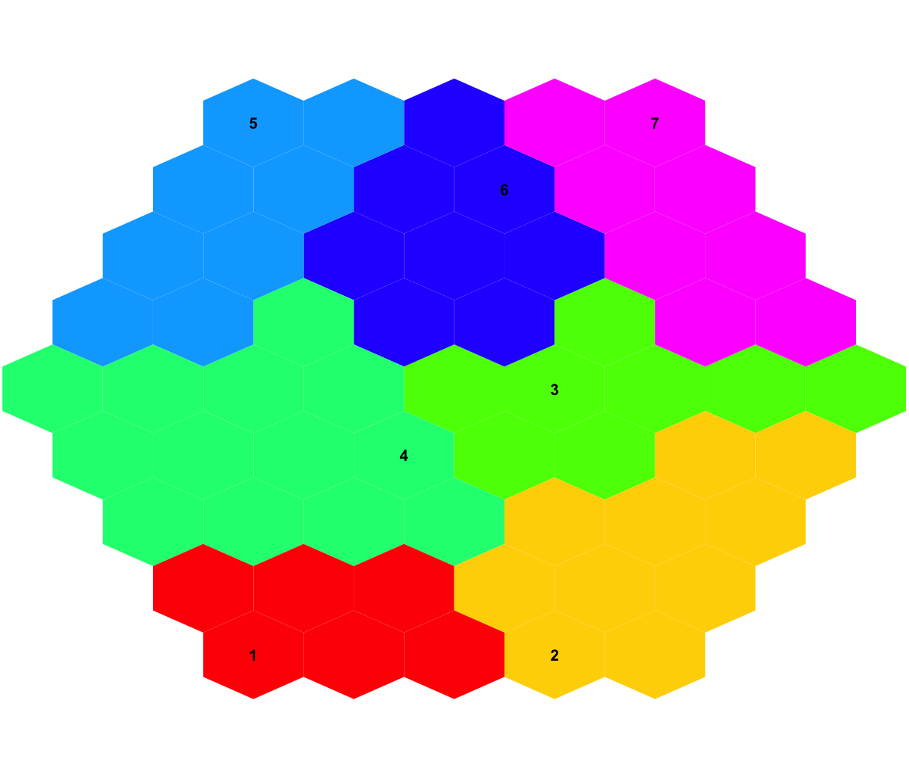

# visDmatCluster allows for visualisation of gene meta-clusters.
# The identification of gene meta-clusters is done by its sister fucntion sDmatCluster.
# Yes. These meta-clusters can also be useful to correlate with sample relationships displayed by visCompReorder. See an example below:
data <- matrix( rnorm(100*10,mean=0,sd=1), nrow=100, ncol=10)
colnames(data) <- paste(rep('S',10), seq(1:10), sep="")
sMap <- sPipeline(data=data)
Start at 2014-05-27 11:55:26
First, define topology of a map grid...
Second, initialise the codebook matrix given a topology and input data...
Third, get training at the rough stage...
Fourth, get training at the finetune stage...
Next, identify the best-matching hexagon/rectangle for the input data...
Finally, append the response data (hits and mqe) into the sMap object...
Below are the summaries of the training results:
dimension of input data: 100x10
xy-dimension of map grid: xdim=9, ydim=9
grid lattice: hexa
grid shape: suprahex
dimension of grid coord: 61x2
initialisation method: linear
dimension of codebook matrix: 61x10
mean quantization error: 4.60312441206232
Below are the details of trainology:
training algorithm: batch
alpha type: invert
training neighborhood kernel: gaussian
trainlength (x input data length): 7 at rough stage; 25 at finetune stage
radius (at rough stage): from 3 to 1
radius (at finetune stage): from 1 to 1
End at 2014-05-27 11:55:26
Runtime in total is: 0 secs
sReorder <- sCompReorder(sMap=sMap)
Start at 2014-05-27 11:55:26
First, define topology of a map grid...
Second, initialise the codebook matrix given a topology and input data...
Third, get training at the rough stage...
Fourth, get training at the finetune stage...
Next, identify the best-matching hexagon/rectangle for the input data...
Finally, append the response data (hits and mqe) into the sMap object...
Below are the summaries of the training results:
dimension of input data: 10x61
xy-dimension of map grid: xdim=6, ydim=5
grid lattice: rect
grid shape: sheet
dimension of grid coord: 30x2
initialisation method: linear
dimension of codebook matrix: 30x61
mean quantization error: 4.0169186787623
Below are the details of trainology:
training algorithm: sequential
alpha type: invert
training neighborhood kernel: gaussian
trainlength (x input data length): 30 at rough stage; 120 at finetune stage
radius (at rough stage): from 1 to 1
radius (at finetune stage): from 1 to 1
End at 2014-05-27 11:55:27
Runtime in total is: 1 secs
visCompReorder(sMap=sMap, sReorder=sReorder)

sBase <- sDmatCluster(sMap=sMap)
visDmatCluster(sMap,sBase)

# As you have seen the previous two images, not only can you tell sample relationships but also the meta-clusters wherein.
Fang H, Gough J. (2014) supraHex: an R/Bioconductor package for tabular omics data analysis using a supra-hexagonal map. Biochemical and Biophysical Research Communications, 443(1), 285-289. http://dx.doi.org/10.1016/j.bbrc.2013.11.103, PMID: 24309102
){kind=link}
){kind=link}